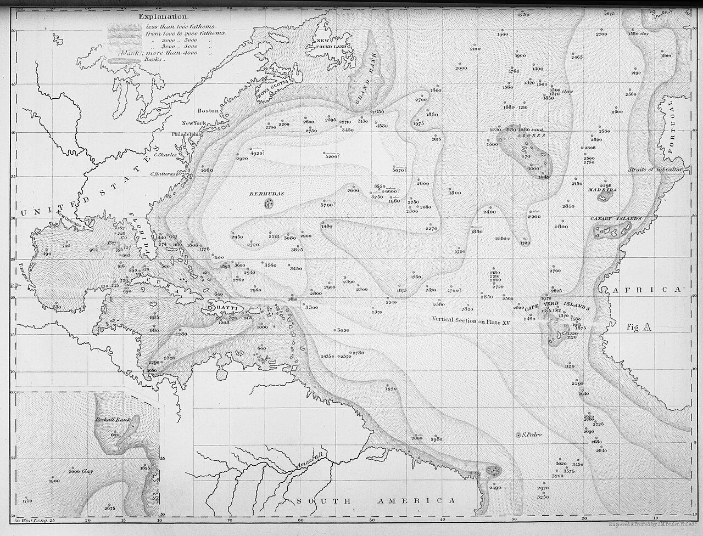
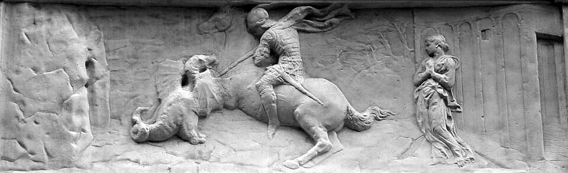
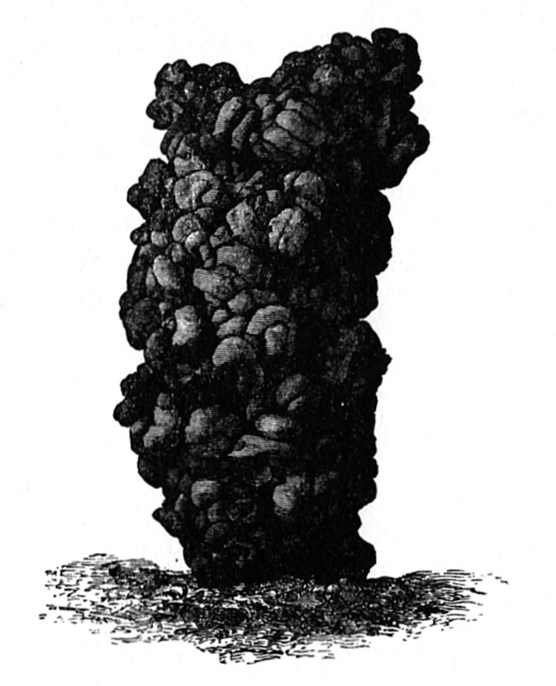
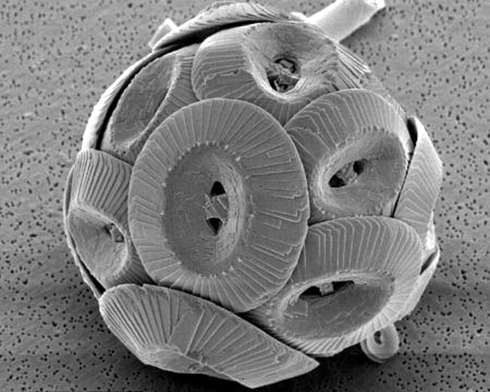
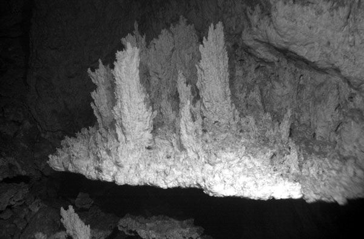
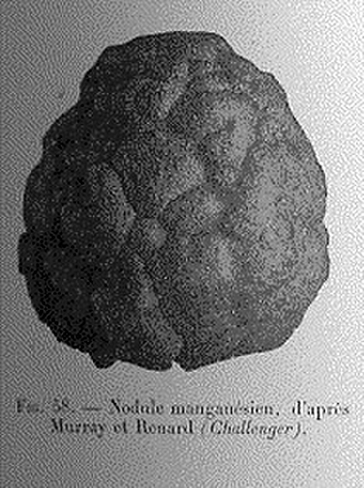
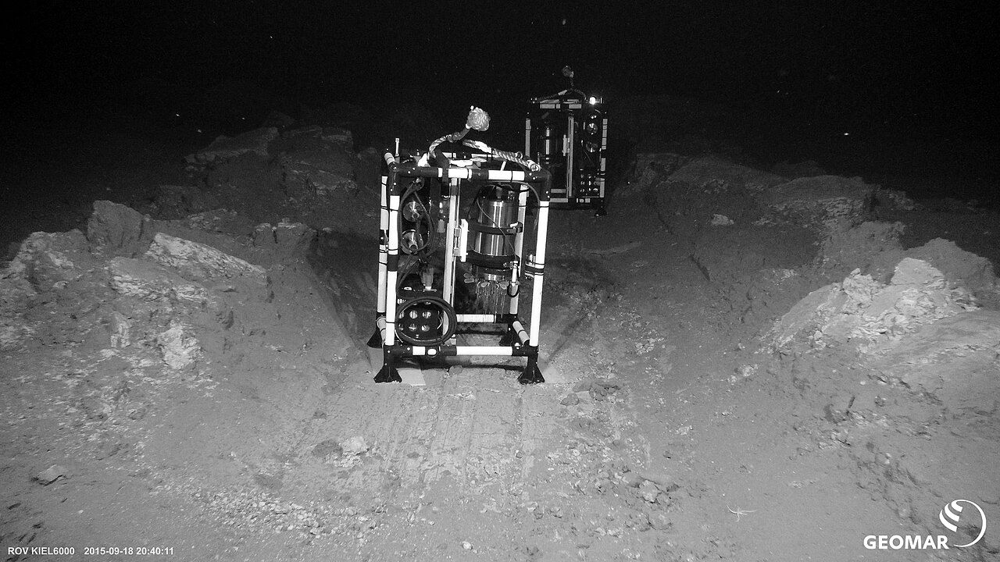

RELIEF · 2026
ReliefWho Carves the Earth
Plates, water and life have spent four billion years carving the surface of a planet. We know the small part that stands in the air. Most of it, no one has yet seen clearly.
Beneath this essay lies a real seafloor: the Mid-Atlantic Ridge, from the edge of the Arctic Ocean past Iceland and the Azores, south to Bouvet Island, some 15,000 kilometers long. At first it is only blind-embossed into the paper, a faint relief about as blurred as what satellites can infer. The thin line across the middle of the screen is the sonar: wherever you read, the seafloor comes up like a rubbing. Land has long been known, so it is always drawn in fine ink. You also have 12 pings of your own to place in the margins. Sound is off by default, and you can switch to text only.
IA Notch in the Ridge
In 1952, at Columbia University's Lamont Geological Observatory on the Hudson, a geologist named Marie Tharp laid six long profiles side by side. Each was the trace of a ship crossing the Atlantic: a ping of sound sent down, bounced off the seabed, timed on its return, converted into depth, joined into a line of rising and falling shadow.

She had never seen that seafloor. Women were not yet allowed on Lamont's research cruises, so her work was to turn the numbers her colleagues brought home into landscape. When the six profiles were aligned, something odd appeared. The individual peaks did not match. But in the dead center of the Mid-Atlantic Ridge, every profile showed the same thing: a V-shaped notch.
She thought it was a rift valley, a seam where the ocean floor was being pulled apart and new rock was welling up from below. That would mean the continents were moving, and in America in the early 1950s continental drift was close to a joke. Her collaborator, Bruce Heezen, dismissed the idea as "girl talk."
She did not back down. She kept drawing. When the epicenters of Atlantic earthquakes were plotted on the same sheet, they fell neatly into her notch, and within a year Heezen was convinced. Later she followed the rift into the South Atlantic, the Indian Ocean, the Red Sea. It runs down the spine of a mountain range that wraps the whole planet, the longest on Earth, nearly 65,000 kilometers, more than ninety percent of it underwater.
The crack at the heart of the largest relief on Earth was first drawn by someone who was not allowed to go to sea, sitting at a desk, working line by line. She did not see it with her eyes. She saw it with echoes.
Tharp's own account of these years is reprinted by the Columbia Climate School: Connect the Dots ↗
IITo Rise
Geographers call the ups and downs of the Earth's surface its relief. They borrowed the word from sculptors. Its root is the Latin relevare, to raise; in Italian it became rilievo, a figure lifted out of a flat ground. Chinese renders it as 浮雕, fu diao, "floating carving": as if the figure drifted up out of the stone on its own, rather than being cut free.
The lightest lift in the history of Western relief happened in Florence around 1417. Beneath his statue of Saint George on the outside of Orsanmichele, Donatello carved a marble panel of the saint fighting the dragon. The cuts are only millimeters deep, yet the scene opens into perspective: the knight and dragon thickest in the foreground, the forms thinning as they recede until the distance is little more than lines scratched into the surface. The technique came to be called rilievo schiacciato, "flattened" or "squashed" relief. Vasari, who recorded the term, likened it to the striking of coins, a die pressed into a blank to leave a permanent impression.

Pressure is the first word for understanding the Earth's relief, too. India pressed into Asia and the Himalaya rose; ice sheets pressed down on continents and the crust sank beneath them. That is modeling, the additive art. Then comes carving: rivers, glaciers, wind and rain take up the chisel, cutting canyons and fjords, rounding off peaks. Then piercing: rain dissolves limestone and waves bore through headlands, leaving caves, natural bridges and sea arches.
One set of forces lifts the land. Another wears it down. Every mountain in front of us is a single frame of that long contest.
IIIAn Invented Sun
Before contour lines were common, the most honest way to convey the shape of mountains was to bring the mountains indoors.
Franz Ludwig Pfyffer von Wyher, a Lucerne patrician, served as an officer in the French army and saw the royal collection of fortress relief models in the Louvre. Back home, he surveyed the mountains around Lake Lucerne and worked from 1762 to 1786, twenty-four years, on what became the Relief der Urschweiz.
It measures about 6.6 by 3.9 meters: plaster mixed with powdered charcoal, clay, pitch and crushed brick, its surface finished in colored wax, folding some 4,100 square kilometers of lakes and peaks into a single room. Scholars traveled from across Europe to look down on it. Before flight, this was about as close to a bird's-eye view as anyone could get. More than two centuries later, researchers at ETH Zurich rebuilt it photogrammetrically and found its heights off from modern maps by only about sixty meters.
The relief is on display today at the Gletschergarten in Lucerne. Its survey history: Cartographica Helvetica ↗
The other way is to paint relief's shadow onto a flat sheet. The Swiss cartographer Eduard Imhof turned hill shading into an art. In 1925 he founded, at ETH Zurich, the world's first academic institute for cartography; in 1965 he published the book now known in English as Cartographic Relief Presentation, which mapmakers still read. His mountains were worked up by hand in charcoal and airbrush. Because the lowest valleys lie farthest from the viewer, he deliberately softened their contrast, the way a painter handles the air in a distance.
All shaded relief depends on one premise. There has to be a sun. Light must arrive from some direction, so that one face of a mountain brightens and the other falls into shadow, and only then does the form rise off the page.
The deep sea has no sun.
In 1977, Tharp and Heezen set out to turn decades of soundings into a single map of the entire ocean floor. They did not hire a draftsman. They hired Heinrich Berann, an Austrian painter famous for his panoramas of the Alps. A man who had spent his life painting snow peaks gave a sun to a landscape that had never known light.
In his painting the mid-ocean ridge winds around the globe like the seam on a baseball, fracture zones slice across it, seamounts cast their shadows. The shadows are invented. The mountains are real.
The original, nearly two meters wide, is now in the Library of Congress. Heezen did not live to see it printed. Months before, he died on a submarine expedition south of Iceland.
Berann's painting is still under copyright and is not reproduced here. A high-resolution scan is at the Library of Congress ↗
IVThe Third Sculptor
The plates do the modeling; water does the carving. But there is a third sculptor, with the smallest tools and the longest commission.
Darwin's last scientific book was not about species but about earthworms. The Formation of Vegetable Mould, Through the Action of Worms appeared in October 1881, six months before his death, on a subject he had been turning over for more than fifty years.
Late in life he and his children would walk out into the cool, damp grass in the early mornings to see what the worms had been doing. He weighed their castings and calculated that, on a single acre, worms turn over tons of earth each year. Roman floors and fieldstones sink slowly beneath generations of their swallowing and casting. Ecologists would not coin the word bioturbation for another century. Every inch of topsoil under our feet has passed through the body of a worm.

The White Cliffs of Dover rise to around 110 meters. In the Late Cretaceous, some 89 to 85 million years ago, global sea level stood more than two hundred meters higher than today, and this was a warm, shallow sea. At its surface drifted single-celled algae called coccolithophores, each armored in tiny calcite plates. When they died, the plates fell like snow and settled as white ooze. The ooze became chalk; the chalk was lifted out of the sea. The black bands in the cliffs are flint. The rest of that white is the cast-off clothing of countless lives.

The Great Barrier Reef runs for nearly 2,300 kilometers, some 3,000 reefs and 900 islands, the largest structure built by living things. Coral polyps pile their skeletons upward, the living growing on the dead, so that only the outermost skin of this whole relief is alive.
In 1994 the ecologists Clive Jones, John Lawton and Moshe Shachak gave such organisms a name: ecosystem engineers. The idea grew partly out of a snail in the Negev Desert that eats rock. They split the engineers in two. Some change the world with their own bodies, like corals and trees. Others change it by acting on other materials, like the beaver building its dam. The first kind models; the second carves. Life practices both arts at once.
Life sculpts even where there is no light.
In December 2000, the submersible Alvin came upon a field of creamy white towers on the flank of an undersea mountain west of the Mid-Atlantic Ridge, more than seven hundred meters down. There, mantle rock reacting with seawater releases hydrogen and methane, and carbonate precipitates layer by layer into chimneys. Some are the size of toadstools; the tallest, named Poseidon, stands more than sixty meters high.
This is the Lost City. It has been venting for at least 120,000 years, and microbes that live on chemical energy crowd its cracks. Some scientists think life on Earth may have begun in a place like this. If so, the third sculptor's first studio was a city of stone that has never seen the sun.

VSnow
It is always snowing in the deep sea.
Oceanographers call it marine snow: the bodies and shells of plankton, mucus, fecal pellets, fine dust blown off the continents, sinking slowly from the lit surface into the lightless depths. A hundred thousand liters of seawater hold only about a gram of such particles. This is the sculptor's clay of the abyss.
In the remotest middle of the ocean, red clay accumulates at one to five millimeters every thousand years, and that clay covers nearly two-fifths of the seafloor. Where the water is shallower and life is richer, oozes made of tiny calcareous shells build faster, but still only a few centimeters per millennium. Hills are blanketed one layer at a time until they vanish into the flattest landscapes on Earth: the abyssal plains.
The manganese nodules lying on those plains grow more slowly still. Potato-sized lumps of metal, they accrete in rings around a fragment of bone or a shark's tooth, about a millimeter every million years. A nodule small enough to hold in your palm may be older than our species.

On timescales like these, the Earth's relief is never still. Mountains are pushed up and ground down; ocean floor is born at the ridges and swallowed in the trenches. We think we are looking at a finished work. We are passing a single frame.
And relief has a second meaning in English: release, the lifting of a burden.
Stress stored in the crust is let go along a fault, and the ground moves. When ice sheets melt, their weight lifts off the continents and the crust rebounds, slowly, over thousands of years. The double meaning may be an accident of language. Still, it invites a thought: every ridge is a very long exhalation of the Earth.
VISeven-Tenths Dark
It is often said that we know the Moon better than our own seafloor. It is not an exaggeration.
Half a century after Berann's painting, most of the ocean floor is still inferred rather than measured. Satellites can detect the faint bulges and dips of the sea surface, shadows that the gravity of undersea mountains casts upon the water. Seafloor reconstructed from those shadows is blurred: hills and canyons a few kilometers across disappear. To see them properly, a ship has to pass directly overhead and fan a beam of sound down onto them.
In 2017 the Nippon Foundation and GEBCO, the General Bathymetric Chart of the Oceans, launched Seabed 2030, a project to map the entire ocean floor by the end of the decade.
That year, just 6 percent had been mapped to modern standards. By April 2026 the figure had reached 28.7 percent, about 104 million square kilometers, contributed by 220 organizations, and also by fishing boats, yachts and cargo ships that log the depths as they pass. Someone sailing across an unsurveyed stretch of sea can, almost incidentally, bring a small patch of the planet into focus.
The latest global coverage map: Seabed 2030 ↗. Newly named undersea features can be looked up in the GEBCO Gazetteer ↗
The rest, some seven-tenths, is still dark.
No one knows exactly what it holds. What is certain is that it holds mountains without names.
In 1975 GEBCO set up its Sub-Committee on Undersea Feature Names, supported by a secretariat at the International Hydrographic Organization in Monaco. A newly found seamount or canyon can be put forward for a name, usually through a national naming authority, with its coordinates, shape and extent, and proof that it has not been named already. Accepted names enter the GEBCO Gazetteer of Undersea Feature Names and become part of the planet's official geography.
On land, nearly every mountain of any size was named long ago. In the sea, finding a mountain and giving it a name is still something that happens.
VIIWhat We Don't See
Maya Lin once put it plainly: "What we don't see, we pollute."
In 1989 the German research vessel Sonne stood off Peru in the South Pacific. Scientists lowered a plough-harrow some 4,150 meters to the seafloor and dragged it back and forth across a circle of eleven square kilometers, cutting seventy-eight tracks, each about eight meters wide.
The experiment, called DISCOL, was meant to simulate what mining manganese nodules would do to an abyssal plain.
In 2015 researchers returned. Twenty-six years on, the plough tracks were still plainly visible in the images from their underwater vehicles. Microbial activity in the old tracks had fallen to a quarter of normal, and the researchers estimated that some ecosystem functions would need at least fifty years to recover. A plain that gathers a few millimeters of mud per thousand years has no quick way to fill in an eight-meter scar.

That was one experiment, on eleven square kilometers. The cut that would be made at commercial scale is now under review. The International Seabed Authority has still not adopted rules for exploitation, and around forty countries back a moratorium or precautionary pause on deep-sea mining.
Meanwhile the United States has streamlined its own permitting, and The Metals Company has applied to mine roughly 65,000 square kilometers of the Clarion-Clipperton Zone in the Pacific. In early November 2026 the company said it expected a US decision by mid-December.
Artists have long been looking for ways to make the unseen seen.
Lin uses sonar data as a sculptural material. Her Water Line (2006) traces in blackened aluminum tubing, suspended in the gallery, the terrain of a stretch of the Mid-Atlantic Ridge. The part of that undersea mountain that breaks the surface is Bouvet Island, one of the most remote islands in the world. Visitors walk beneath it like fish crossing the seafloor. Working with the Woods Hole Oceanographic Institution, she has also transcribed a piece of the North Atlantic floor into a grid of wire, and her marble rings are sections of the ocean floor cut along the Equator, the Arctic Circle and the latitude of New York City.
Lin's work is under copyright. For images, see Maya Lin Studio · Systematic Landscapes ↗
Earlier still came Isamu Noguchi.
In 1947, after Hiroshima and Nagasaki, he shaped an abstract face in sand on a board a foot square and called it Sculpture to Be Seen from Mars; its original title was Memorial to Man.
As he imagined it, the nose alone would be a mile long, large enough to be seen from space, a gravestone for a future civilization in case humanity destroyed itself. He called it a requiem for everyone living with the atomic bomb. It was never built. Only a photograph of the sand model survives.
The photograph of the sand model, by Soichi Sunami, is in the Noguchi Museum Archives. Related exhibition material: Memorials to the Atomic Dead ↗
For Noguchi, the earth itself was already relief. It needed only a viewpoint far enough away.
The gentlest answer comes from underwater.
Since 2009 the British sculptor Jason deCaires Taylor has placed more than five hundred life-size figures four to eight meters down off Cancún. Many were cast from more than ninety local fishermen and women, in pH-neutral cement, so that coral would grow on them.
The artist makes the first cut and then lets go, leaving the rest to coral, sponges and fish. More than a decade later, those faces with their closed eyes are covered in life.
Photographs of the underwater sculptures: Jason deCaires Taylor · MUSA ↗
VIIIA Work That Doesn't Exist Yet
Some have sculpted the land, some have carried the seafloor into galleries, some have made the deep a place of dread. But almost no work yet uses real bathymetric data to let a person discover, or shape, the relief of the deep sea with their own hands.
It is worth imagining what one might be like.
Picture a screen that is entirely black. You press a key and hear a ping. Seconds later a small cloud of points glows in the darkness, and a corner of the seafloor floats up out of nothing.
The "floating" in floating carving becomes an action.
Every ping has a cost, in energy, in time, in disturbance to whatever lives below, so you must choose where to listen.
Iron Lung (2022) has already shown that not seeing can be an experience in itself: it welds the submarine's window shut and leaves you only coordinates and delayed, grainy photographs. Here, though, the seafloor would not need to be invented. The surveyed three-tenths could be sharp, and only the satellite-inferred seven-tenths left in soft outline.
Exploring would mean raising the planet's resolution, one patch at a time. Go far enough and you would come upon a mountain with no name.
Now picture the reverse.
You are no longer the explorer but the chisel itself: the spreading ridge, the carbonate settling out of a vent, marine snow that has been falling for ten thousand years, a nodule that grows a millimeter every million.
You set the speed of time: a second per year, a second per ten thousand years, a second per million.
From Dust (2011) let players push sand, water and lava around by hand and proved that kneading a landscape can be its own pleasure. Terra Nil (2023) asks players to heal a wasteland, then dismantle every building and leave without a trace.
In the deep sea the mood of the work would be patience.
Until, at some moment, a mining machine rolls into the frame and in minutes ploughs open the surface you spent tens of thousands of years laying down. No sermon would be needed. Only the difference in speed.
The last is not a game at all.
A physical relief on a wall, milled by machine or made of an array of rising and falling pins, that slowly grows detail with every update to the global bathymetry.
Today it would be mostly smooth and vague. In ten years it might be crowded with ridges and canyons.
What it records is not the seafloor itself, but the process of humanity coming to see it.
It could also be a mirror: a mirror slowly lit, in the dark, by sonar.
·Coda
Marie Tharp died in 2006, at eighty-six. The rift she drew is now in every geology textbook, and the sun Berann painted onto her seafloor still hangs in university corridors around the world.
A relief is a relief because it never leaves its ground. The figure rises, but it stays joined to the stone.
So it is with the Earth.
Mountains, reefs, forests, worms and we ourselves have all risen out of the same ground.
The part of this work that stands in the air, we have been looking at for thousands of years. The seven-tenths beneath the water are still waiting: for a ping, for a name, for someone willing to look slowly enough.